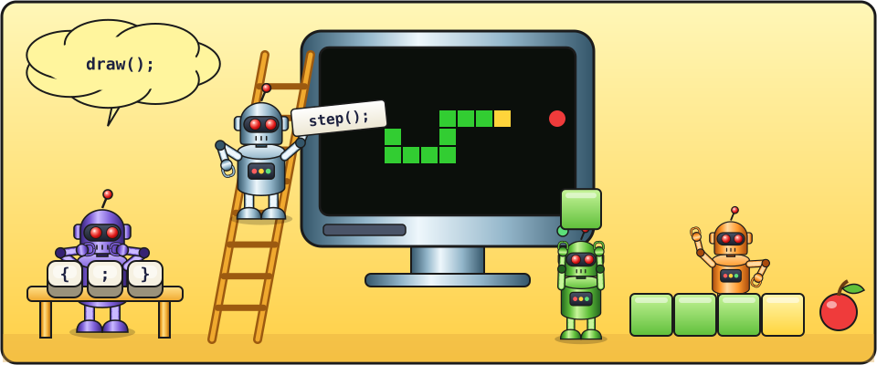

From zero · 17 lessons · 40–60 minutes each
Let's write a Snake game in JavaScript
Hi! In this course you will write a real computer game — Snake — line by line, all by yourself. You'll be able to show it to your friends and even put it on the internet.

- a Raspberry Pi computer with Raspberry Pi OS, a monitor, a keyboard and a mouse;
- the Geany editor (lesson 0 shows how to find or install it);
- the Firefox browser (it comes with Raspberry Pi OS);
- curiosity, patience and a little courage to make mistakes. Mistakes are normal!
The course is designed for a child of about 10 who has never programmed and doesn't know Linux or code editors yet. No terminal is needed: everything is done with the mouse, in the editor and in the browser. All files live in one folder, and the game itself is a single file, snake.html. Styling (CSS) is deliberately left until the game is finished: first we learn to program, then we decorate. Everything works locally, without git or internet; internet is only needed in the last lesson, where the game is published on GitHub Pages through the website.
- One session — one lesson, 40–60 minutes. Each lesson starts with a minute-by-minute plan. If your child gets tired, it's better to stop halfway and continue next time.
- Code should be typed by hand, not copied. That's how both the commands and the keyboard symbols are remembered. Typos and hunting for them are part of learning too.
- Don't give hints right away. First ask: "What does the console say? Which line?" Learning to find mistakes is as important as writing code.
- Tasks marked with a star ⭐ are optional — for those who want more.
Part 1. Getting started
- 0Setting up the computerDesktop, keyboard symbols, a folder for your programs, the Geany editor45–60 min
- 1Your first programCreate a file, write code, run it in the browser45 min
- 2The console and errorsThe programmer's secret window and how to read errors40 min
- 3VariablesLabelled boxes for numbers and text45 min
Part 2. Drawing
- 4Canvas and coordinatesCreate the game file and draw squares45 min
- 5FunctionsInvent your own commands45 min
- 6LoopsRepeat actions without repeating code45 min
- 7Arrays and objectsDescribing the snake and the apple50 min
Part 3. Bringing it to life
- 8The snake crawlsTimer and animation45 min
- 9Conditions"If… then…" and magic portals45 min
- 10Arrow key controlsListening to the keyboard45 min
- 11The apple and growingRandom numbers and the score50 min
Part 4. A real game
- 12Game overWalls, the tail and the "Game over" message50 min
- 13New gameRestart with Space, and no apples inside the snake50 min
- 14Speed and high scoreThe game speeds up, remembers your best score, and we catch a bug55 min
Part 5. Showing it to the world
- 15Making it prettyCSS: colours, borders, fonts and a round apple45 min
- 16The game on the internetPublish Snake on GitHub Pages and think about what's next45–60 min